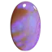

Mineral Grimoire

Lavender Purple OpalAppearance
Lavender to purple colored opal in matrix.
Origin
United States.
Attributes
Lavender-Purple Opal is a very gentle form of Opal that cleanses the third eye, soma and higher crown chakras to open insight and spiritual vision. This stone works with the higher spiritual centers to facilitate connection with divine guidance and inner wisdom.
Healing
Lavender-Purple Opal works primarily on the spiritual and energetic levels, opening and cleansing the higher chakras for enhanced spiritual perception.
Position
Place on third eye, crown or higher crown chakras. Disperse gem essence around the aura.
Spellworking
Lavender-Purple Opal is a very gentle form of opal that cleanses the third eye and higher crown chakras. Use it for opening spiritual vision, insight, and connecting with divine guidance. The purple color adds spiritual depth to opal's psychic properties.